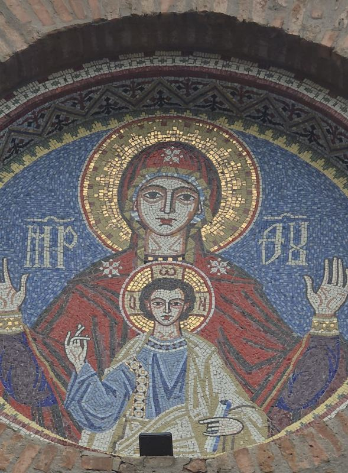
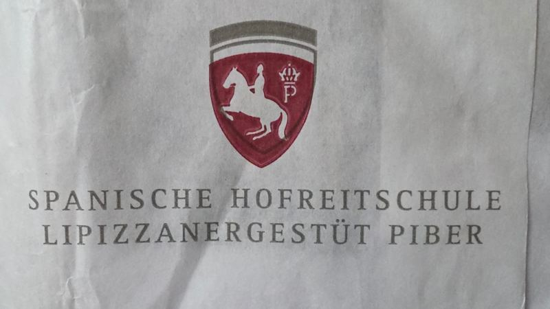
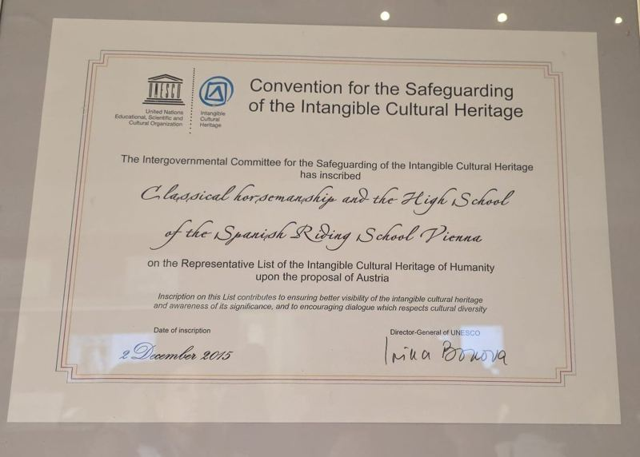
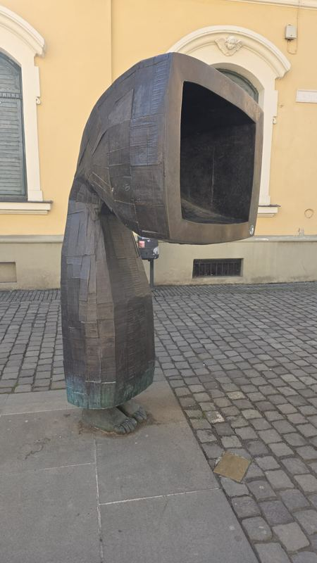
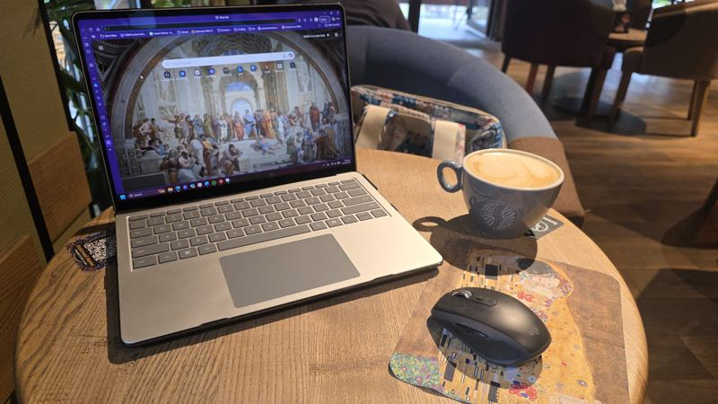
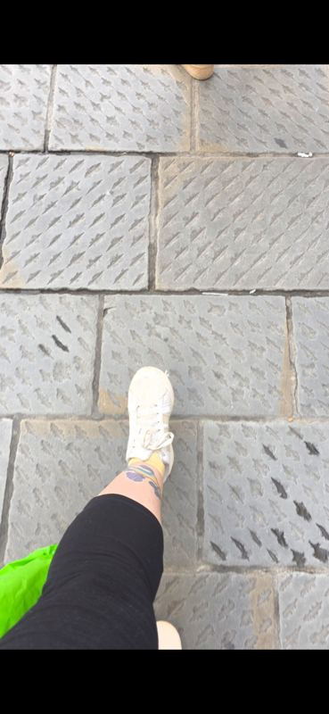
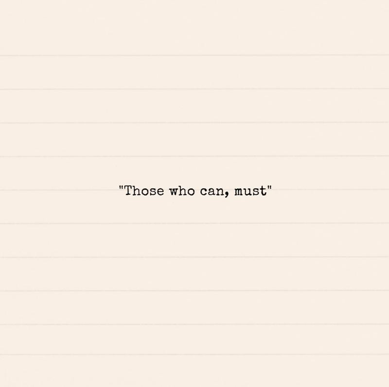
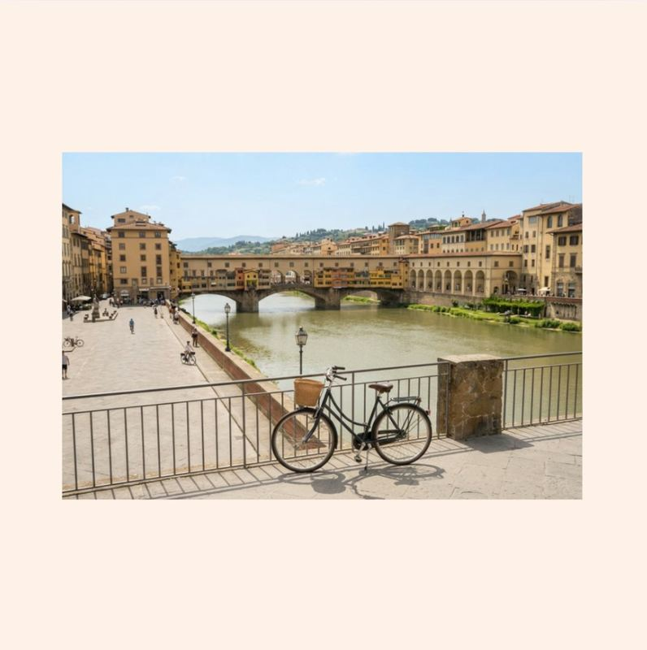
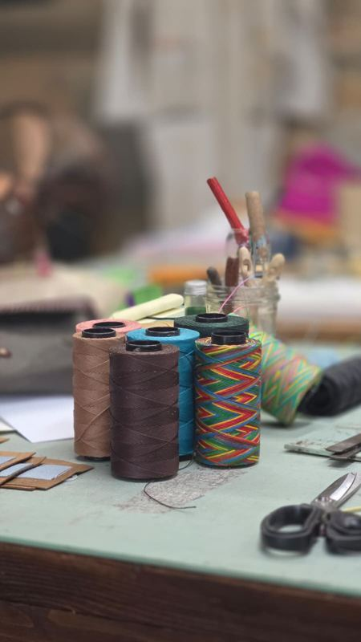
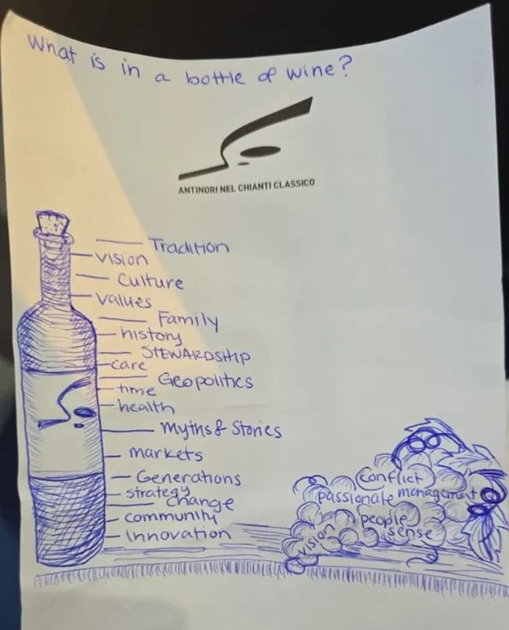

Bucharest: Crisis Creates Opportunities… But for Who? The 1977 earthquake gave the regime cover to bulldoze neighborhoods, which made me rethink a phrase I have leaned on for years in crisis work. Crisis doesn't decide what gets built or erased, people do.Leadership notes
Leadership, ethics and systems
The posts where travel turned into thinking about leadership, care, power and governance.
15 posts

Vienna: Dancing White Horses and Chandeliers Watching a Lipizzaner training session at the Spanish Riding School in the Hofburg. The horses' visible mistakes and years of repetition handed me a lesson I give others and rarely apply to myself.
Vienna: A Kind of Pentimento Over coffee after the show, strangers told me how the Lipizzaners nearly disappeared in WWII. It connects to pentimento, the art term at the center of my leadership research.
Learning to Orient While Abroad Washing machines, signs, and insurance offices keep forcing me to stop and orient before acting. Judgment sometimes starts on a street corner, and the schnitzel I ordered turned out to be liver.
What a Visa Office Taught Me About AI Governance Three weeks of circular insurance rejections for a visa became a case study in opaque systems with no accountable owner. It draws on my research project "What Frameworks Cannot See." Why I Was in Florence
The series opener: a small conference that felt more like a retreat, held under Raphael's School of Athens. It previews themes of care, power, place, and tradition.
Why I Was in Florence
The series opener: a small conference that felt more like a retreat, held under Raphael's School of Athens. It previews themes of care, power, place, and tradition.

The History of Florence Is Full of Women… If You Know Where to Look Art historian Cristina Bibbiani's tour surfaced the women hidden in Florence's history. Walking home, I wondered what maps I've been missing in other cities. Respect Is Not Silence
Unattributed notes from a panel of accomplished women on voice, legitimacy, and leadership style. The relief was learning that weight I thought was mine alone sits on a lot of shoulders.
Respect Is Not Silence
Unattributed notes from a panel of accomplished women on voice, legitimacy, and leadership style. The relief was learning that weight I thought was mine alone sits on a lot of shoulders.

Lead Beautifully, Live Beautifully Gonzaga alum Sarah Kinsella's session on "those who can, must" and not confusing exhaustion with seriousness. Living well is part of how the work gets done, not a reward afterward. A Blank Page About Care
In Denise Hossom's care-ethics workshop, my page stayed nearly empty while everyone else's filled up. Receiving care, it turns out, is the harder part for me.
A Blank Page About Care
In Denise Hossom's care-ethics workshop, my page stayed nearly empty while everyone else's filled up. Receiving care, it turns out, is the harder part for me.

A Woman on a Bicycle A short prose poem, inspired by Carolotta Ferrari's story, about a mother held up by a network of women across the city. Written differently from the rest of the notes. A Global City at Human Scale
A slow, loud group dinner on the first night shows how trust needs unhurried time. Real influence starts with people who have time to know each other.
A Global City at Human Scale
A slow, loud group dinner on the first night shows how trust needs unhurried time. Real influence starts with people who have time to know each other.
 The Power of Patrons
Repeat visits to the Accademia and David lead to the question of what wealth and patronage owe the future. Powerful people leave fingerprints, and some become wounds, some beauty, some both.
The Power of Patrons
Repeat visits to the Accademia and David lead to the question of what wealth and patronage owe the future. Powerful people leave fingerprints, and some become wounds, some beauty, some both.

The Weight of Tradition A visit to Florence's leather school, shadowed by the recent death of Tommaso Melani. It contrasts inherited craft with Francesca Gori's bags, which make history vivid instead of embalming it.
What Is in a Bottle of Wine? I barely drink wine, but at Antinori nel Chianti Classico I was captivated by people explaining what they love. Inheritance, stewardship, and tradition versus innovation in a centuries-old family business.